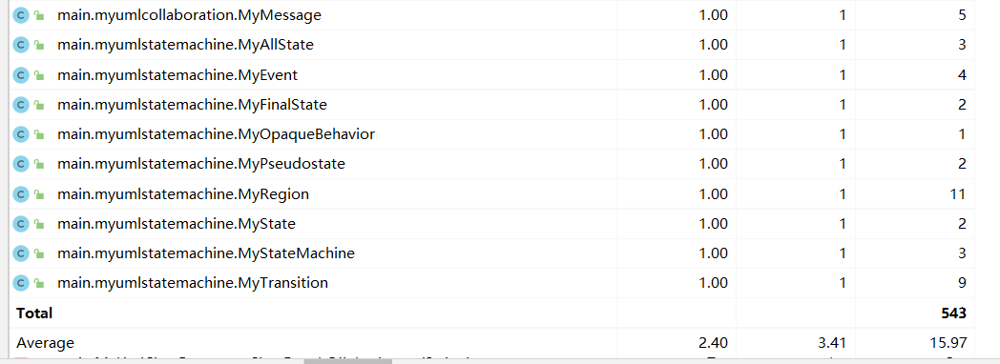
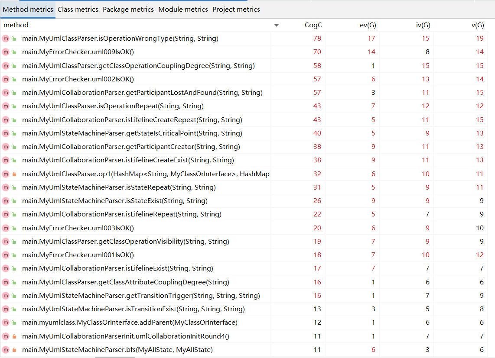

OO第四单元总结
要求
第一次作业总结
分析
本单元需要实现的是一个
UML解析器，实现对经过处理为特殊格式但保留主要信息的UML源码的解析本次作业要完成的是对
UML图中的类图的解析处理任务，需满足能够处理多种不同的对类图的信息进行查询的指令官方程序已实现基本字符串处理并且规定了要实现的接口，
AppRunner开启了解析线程，在run()函数中将储存UmlElement对象的容器作为参数传给了MyImplementation， 参数为处理后的UmlElement的各个子类相当于直接获得
UmlElement的各个子类元素并且配饰好了其属性的访问方法，直接使用与处理即可
基本思路
此单元作业重点在于对于
UML的各元素的处理，存储并构建好所有元素的数据结构，完整的保留原本的UML图中所包含的信息，并且通过合理的设计使其便于查询，查询方法只需在自己构建好的架构之下稍加拓展即可实现对各
UmlElement的各子类进行预处理，封装为对应继承MyElement的各子类，封装后能自主根据题目需求添加数据结构，满足题目的要求采用数据结构：树
原因：各
UML元素关系均为树状关系，类图的关系图如下
处理方法：层次化读入处理
原因：提供的
UmlElement的各子类是随机的，而按照树型结构建立模型的话，父、子结点之间关系的建立必须先有父结点，再有子结点，因此，按照父子节点的关系，将UmlElement的各子类按层次划分，按轮次处理，确保了建树过程中的自上而下建模的可行性第一轮处理：
UML_CLASS、UML_INTERFACE、UML_ASSOCIATION第二轮处理：
UML_ATTRIBUTE、UML_OPERATION、UML_ASSOCIATION_END、UML_GENERALIZATION第三轮处理：
UML_PARAMETER、UML_INTERFACE_REALIZATION
具体实现
我的元素类
MyElement- 保存
UML元素的基本属性id，parentId，name并配置访问方法
- 保存
类图第一层元素
MyClass、MyInterface、MyAssociationMyClass、MyInterface：存储对应的visibility属性并配置访问方法
类图第二层元素
MyAttribute、MyOperation、MyAssociationEnd、MyGeneralzationMyAttribute：存储对应的visibility、type、referenceId、typeName属性并配置访问方法MyOperation： 存储对应的visibility属性并配置访问方法MyOperation： 存储了该类拥有的MyParameter，并配置了访问方法
类图第三层元素
MyParameter、MyInterfaceRealizationMyParameter： 存储对应的visibility、type、referenceId、direction属性并配置访问方法MyInterfaceRealization： 存储对应的source、target属性并配置访问方法
我的类与接口类
MyClassOrInterface- 由于类与接口有大多数相同的使用和属性之处，因此令
MyClass和MyInterface继承此类，此类继承MyElement - 使用
HashMap<MyClassOrInterface, Integer>储存该类 / 接口的所有父类（直接父类 / 间接父类）和所有子类（直接子类 / 间接子类），并且记录其到该类的继承深度 - 存储该类拥有的
MyAttributes和MyOperations，并配置了访问方法
- 由于类与接口有大多数相同的使用和属性之处，因此令
解析处理类
MyParser- 在此类完成三个层次的建模，并且完成题目要求实现的接口的具体算法实现，并且提供检查是否应该抛出异常的函数
- 在此类完成三个层次的建模，并且完成题目要求实现的接口的具体算法实现，并且提供检查是否应该抛出异常的函数
实现接口类
MyImplementation- 以
elements为参数创建MyParser实例，实现官方接口，调用对应函数检查及抛出异常，无异常则执行对应解析操作
- 以
基于度量的程序结构分析
总UML类图
（可以放大观看）
代码规模分析
方法复杂度分析（部分）
类复杂度分析
第二次作业总结
分析
本次作业需要实现的是在第一次作业
UML解析器上进行增量开发，新增了两种图：顺序图和状态图，并新增了多个不同的对这两类图的信息进行查询的指令处理新增两种图与第一次作业大同小异，在第一次作业的架构之下进行增量开发即可
基本思路
本次作业新增的两个图同样适用于上一次作业使用的层次化处理，采用的数据结构也不变
顺序图和状态图的关系图如下

顺序图：
第一轮处理：
UML_COLLABORATION第二轮处理：
UML_INTERACTION、UML_ATTRIBUTE第三轮处理：
UML_LIFELINE、UML_ENDPOINT第四轮处理：
UML_LIFELINE、UML_ENDPOINT状态图：
第一轮处理：
UML_STATE_MACHINE第二轮处理：
UML_REGION第三轮处理：
UML_STATE、UML_PSEUDOSTATE、UML_FINAL_STATE第四轮处理：
UML_TRANSITION第五轮处理：
UML_EVENT、UML_OPAQUE_BEHAVIOR
具体实现
修改：
解析处理类
MyParser- 在此类完成顺序图四个层次以及状态图五个层次的建模，并且完成题目要求实现的接口的具体算法实现，并且提供检查是否应该抛出异常的函数
- 在此类完成顺序图四个层次以及状态图五个层次的建模，并且完成题目要求实现的接口的具体算法实现，并且提供检查是否应该抛出异常的函数
属性类
MyAttribute- 注意该类的
parentId可以是类图的MyClass 、 MyInterface也可以是顺序图的MyCollaboration，要据此划分为不同图中的元素
- 注意该类的
新增：
顺序图第一层元素
MyCollaboration- 存储该类拥有的
MyInteraction和MyAttribute，并配置了访问方法
- 存储该类拥有的
顺序图第二层元素
MyInteraction、MyAttributeMyInteraction：存储该类拥有的MyInteraction和MyAttribute，并配置了访问方法MyInteraction：存储对应的visibility属性并配置访问方法MyAttribute：存储对应的visibility、type、referenceId、typeName属性并配置访问方法
顺序图第三层元素
MyLifeline、MyEndPointMyLifeline：存储对应的represent、isMultiInstance属性并配置访问方法MyLifeline：使用ArrayList<String>存储收到的所有消息发送者，存储发出的所有信息接受者MyLifeline：使用ArrayList<MyMessage>存储收到的所有消息，存储发出的所有信息MyEndPoint：存储对应的visibility属性并配置访问方法MyEndPoint：使用ArrayList<String>存储收到的所有消息发送者，存储发出的所有信息接受者MyEndPoint：使用ArrayList<MyMessage>存储收到的所有消息，存储发出的所有信息
顺序图第四层元素
MyMessage- 存储对应的
messageSort、visibility、sourse、target属性并配置访问方法
- 存储对应的
状态图第一层元素
MyStateMachine- 存储该类拥有的
MyRegion，并配置了访问方法
- 存储该类拥有的
状态图第二层元素
MyRegion- 存储该类拥有的
MyPseudostate，MyState，MyFinalState，MyTransition，MyAllState，并配置了访问方法 - 存储对应的
visibility属性并配置访问方法
- 存储该类拥有的
状态图第三层元素
MyState、MyPseudostate、MyFinalStateMyState：存储对应的visibility属性并配置访问方法MyPseudostate：存储对应的visibility属性并配置访问方法MyFinalState：存储对应的visibility属性并配置访问方法
状态图第四层元素
MyTransition- 存储对应的
visibility，guard，sourse，target， 属性并配置访问方法 - 存储该类拥有的
MyEvent，MyOpaqueBehavior，并配置了访问方法
- 存储对应的
状态图第五层元素
MyEvent、MyOpaqueBehaviorMyEvent： 存储对应的visibility，expression，values， 属性并配置访问方法
类图元素初始化处理类
MyUmlClassParserInit- 对类图元素进行层次化处理和建模
- 对类图元素进行层次化处理和建模
顺序图元素初始化处理类
MyUmlCollaborationParserInit- 对顺序图元素进行层次化处理和建模
- 对顺序图元素进行层次化处理和建模
状态图元素初始化处理类
MyUmlStateMachineParserInit- 对状态图元素进行层次化处理和建模
- 对状态图元素进行层次化处理和建模
类图元素解析类
MyUmlClassParser- 对与类图有关的查询指令进行解析处理和返回
- 对与类图有关的查询指令进行解析处理和返回
顺序图元素解析类
MyUmlCollaborationParser- 对与顺序图有关的查询指令进行解析处理和返回
- 对与顺序图有关的查询指令进行解析处理和返回
状态图元素解析类
MyUmlStateMachineParser- 对与状态图有关的查询指令进行解析处理和返回
- 对与状态图有关的查询指令进行解析处理和返回
基于度量的程序结构分析
总UML类图
（可以放大观看）
代码规模分析
方法复杂度分析（部分）
类复杂度分析

第三次作业总结
分析
本次作业需要实现对
UML各种模型的常见的几类错误检查，没有新增的UML模型元素，只需检查模型有效性由于各种图内的元素均已经建模完毕，所以只需要在前两次代码的架构之下对已有的模型元素的信息进行分析，进行增量开发即可
模型有效性检查部分，将在实例化完毕后自动按序触发执行，而不需要通过指令的形式执行；执行中一旦发现不符合规则的情况，将直接退出，不进行后续有效性检查和指令查询
基本思路
- 本次作业不需要对原有的建模进行改动，根据前两次作业建模而成的模型，针对具体的错误检查指令，进行对应的的处理与解析操作即可
具体实现
修改：
新增：
基于度量的程序结构分析
总UML类图
（可以放大观看）
代码规模分析
方法复杂度分析（部分）
类复杂度分析（部分）
总结本单元作业的架构设计
- 本单元主要采用层次化处理各个
UML元素，并且先建立模型再解决问题，使程序中的建立模型过程和解决查询需求功能的耦合度降低，符合了面向对象的设计思维；对所有UML元素封装为自身的可控制的元素，并且配置好各类属性的访问方法，再针对具体需求添加对应的合适的容器存储所需的元素
总结自己在四个单元中架构设计思维及OO方法理解的演进
- 四个单元各有所差异，架构设计也要通过具体问题具体分析而定；但是，对于这四个单元的架构设计，在第一次作业的时候就应该考虑到之后可能迭代的需求，对这些需求尽可能的留好迭代的接口，处理模型的方法尽可能的与需求解耦合，实现独立完成模型增加和需求增加的两种独立方向的迭代；根据第一次作业的需求，选择最合适的框架进行建模，保证后面的需求迭代不会太过于超出该框架之内；一切物体皆对象，把具体事物对象化处理，这是面向对象课程的核心思想
总结自己在四个单元中测试理解与实践的演进
- 在四个单元的测试中，学会了如何覆盖性的构造测试数据以测试自身代码的正确性，学会了如何使用压力测试来测试自身代码和他人代码的鲁棒性，不断提升了自己编写测试代码（评测机）的能力
总结自己的课程收获
- 在面向对象这一门课程的学习中，我收获到了许多；自身的代码架构思路得到了锻炼，在设计架构的时候会考虑到客户的需求变更与版本迭代；学习了契约式编程，为甲乙方的需求沟通提供了一个规格化的渠道；对代码中的异常进行了处理，提升了代码的可靠性与安全性；练习了自身对代码的测试能力，大致了解了评测机的原理
立足于自己的体会给课程提三个具体的改进建议
- 针对研讨课制度：
- 成员的参与度不高，我本人身为一个平时社交能力还算可以的小组成员，明显感觉到交流这种事情需要一个带动话题者（社牛），要不然整个小组就会由于没有新话题产生而尬住，然后一直尬下去；并且有多次研讨课需要研讨的内容本身的指向性不够明确，有的时候不知道应该围绕什么问题展开讨论，或者大多数时间是在强行找话题；针对性的解决办法：为每次的研讨课提供可以讨论的具体的需要回答的问题和方向
- 校级和积极领导讨论的赏罚制度不明确，由于是以小组为单位评分，组内有成员不认真对待讨论不会得到惩罚反而会使责任心强的同学多担责以避免小组成绩过低；针对性的解决办法：可以在课后就小组内的成员的贡献建立小组内互评打分机制
- 目前所设置的主持人记录人和发言人之中，上台演讲对大多数没有台上讲话的同学而言仍然让人退避三舍，导致无论小组怎么分组，最后上台分享的始终是那几个人；并且小组分享的时间过长，每组内容大多重复，十分容易降低减低听众的兴趣和学习欲望；针对性的解决办法：可以采取自愿上台而不是每小组强制上台的方法，没上台的小组可以直接和老师或者助教在台下分享；从一名分享者变为两名（20min + 20min），压缩小组分享时长”
by Tan